General Logic
General Logic is a method common to most Sudoku solving algorithms.
General Logic is a generalization of BaseSet/CoverSet.
You need to understand the Fish algorithm.
The first step of the Fish extension is (Finned) Franken/Mutant Fish.
This section is based on
A General Logic for Sudoku(www.sudokuone.com/sweb/general.htm).
Weak link
GeneralLogic's basics is a weak links.
Sudoku has constraints on rows, columns and blocks.
Franken/Mutant Fish is an algorithm composed of rows, columns, and blocks.
Furthermore, from the Sudoku rule that any digit from 1 to 9 enters for 9×9 cells, each cell is also weak link.
In total, Sudoku has 324 constraints.
general Logic is an algorithm composed of weak links in rows, columns, blocks, and cells.
(Strong links are included in weak links.)
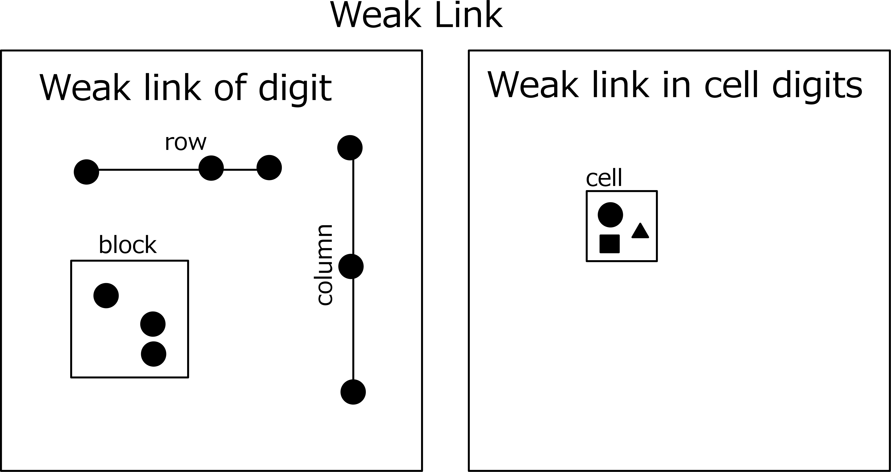
BaseSet, CoverSet, Rank
BaseSet : Select n weak links so that they do not overlap.
This n weak links are called BaseSet(n-BaseSet).
There is one true for each weak link, and there are n trues for BaseSet as a whole.
CoverSet : Choose m(m≧n) weak links different from BaseSet to completely
cover BaseSet. This is called CoverSet(m-CoverSet).
There may be elements that do not belong to BaseSet .
In order for General Logic to be established,
Elements that do not belong to BaseSet are required to establish General Logic.
CoverSet may overlap. The true number of CoverSet is m or less.
Rank : Define the ranking of BaseSet and CoverSet pairs as follows.
BaseSet/CoverSet Rank＝ｍ-ｎ
General Logic
rank 0:
When the n-CoverSet completely covers the n-BaseSet,
the cells/digits of CoverSet-BaseSet (difference set) are not true.
If the difference set is empty, the logic here does not hold.
If true, the weak link containing it will have no truth in the intersection with BaseSet.
Therefore, n-1 true is included in CoverSet∩BaseSet.
In other words, BaseSet got lost. Therefore, the first assumption is incorrect.
The following figure is the simplest Fish BaseSet(column) and CoverSet(line).
Check BaseSet and CoverSet, BaseSet-CoverSet(difference),
BaseSet∩CoverSet(common) .
Note that BaseSet-CoverSet is not limited to one element.
Even if there are two or more, all of them can be excluded.
rank 1:
Consider the case of covering n-BaseSet with (n+1)-CoverSet.
The choice of CoverSet covering n-BaseSet is free.
In order to be an analysis algorithm, the following conditions must be satisfied.
Condition 1:(n+1)-CoverSet completely covers n-BaseSet.
Condition 2:Two of the (n+1)weak links of CoverSet have elements in common which are not included in the n-BaseSet.
When these conditions are satisfied, the elements of the intersection of condition 2 are not true.
Assumed that the digit X of the common part is true.
Since digit X is not included in Baseset and is contained in two weak links of CoverSet,
there are n-1 weak links of CoverSet including true of BaseSet.
The first assumption is incorrect as the true number of BaseSet is insufficient.
Next is an example of rank 1, BaseSet are 3 cells.
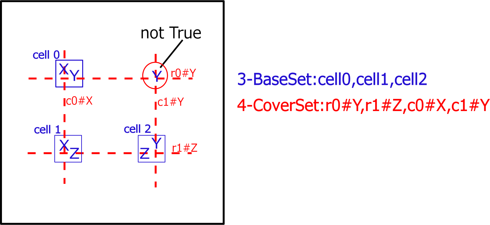rank k(k≧1):
Consider the case of covering n-BaseSet with (n+k)-CoverSet.
The configuration is the same as Rank 1.
In order to be an analysis algorithm, the following conditions must be satisfied.
Condition 1:(n+k)-CoverSet completely covers n-BaseSet.
Condition 2:(k+1) of the (n+k)weak links of CoverSet have elements in common which are not included in the n-BaseSet.
When these conditions are satisfied, the elements of the intersection of condition 2 are not true.
Assumed that the digit X of the common part is true.
Since digit X is not included in Baseset and is contained in (k+1) weak links of CoverSet,
there are n-1 weak links of CoverSet including true of BaseSet.
The first assumption is incorrect as the true number of BaseSet is insufficient.
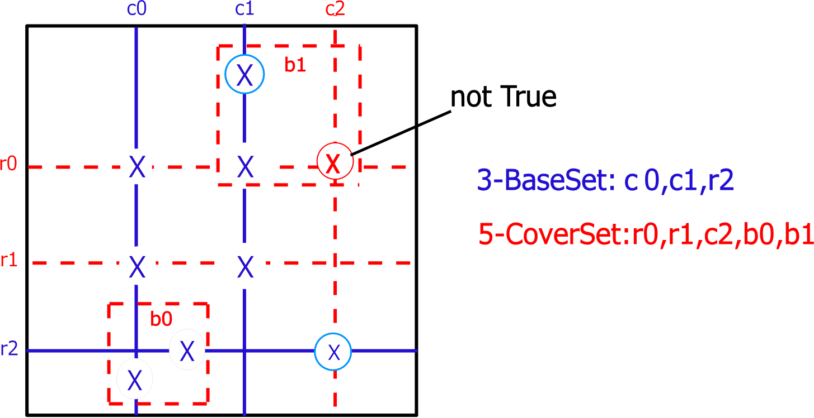
General Logic program code
General Logic program code is in GNPX proj Sudoku analysis application source project .
The algorithm is relatively simple, since Fish is extended to rows, columns, blocks, and cells.
However, be aware of the following points.
General Logic is logic to exclude cells/digita that break Locked as "not true".
There is no way to decide which cell/digit the candidate is unique.
In addition to General Logic, you need code to fix (eg Single).
Minimum programs to solve Sudoku can be configured with "single+General Logic".
However, GeneralLogic's search has a larger computational complexity than the conventional method,
which is a major practical problem.
In the current version of GNPX, it took several tens of minutes to solve the 4th order GeneralLogic
(using some speed-up procedures).
It can not be solved within the practical use time for the 5th or higher order or the rank 2 or more.
Original paperA General Logic for Sudoku,
there is an example of 7th rank 3.
Example of General Logic solution
Here is an example of GeneralLogic solution.
In the upper, cells and digits excluded as "LockedTriple [3D] r459c2#168 r37c2#1 is not True" are the same,
but there is no solution corresponding to the conventional method.
The lower can exclude the same cell/digit in ALS-XZ(Singly Linked) (lower right).
However, the method used is quite different.

3..5....2.5.2...1.....36.....59.7.31..9...4..23.8.46.....79.....7...8.4.8....2..9
5..7....3.3.4...6.....36.....45.1.29..9...4..68.9.27.....27.....1...3.5.7....5..4
As shown in the following table (application example of General Logic),
the solution of the conventional method can be reinterpreted by GeneralLogic.
The next example is the 4th order General Logic (rank 0,1). In this way,
the conventional method may not correspond to the GeneralLogic solution.
GeneralLogic shows that it is a more general solution.
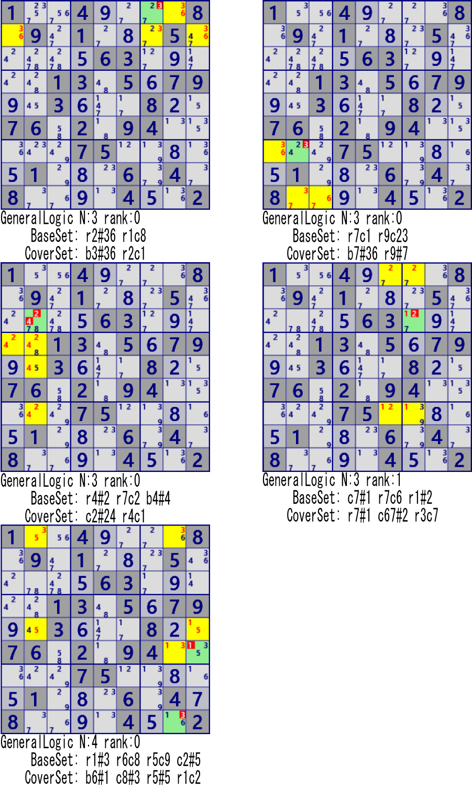
1..4....8.9.1...5.....63.....13.5.79..3...8..76.2.94.....75.....1...6.4.8....4..2
It is also an issue to explore the new solution from the GeneralLogic solution.
Application example of General Logic
An example of applying General Logic to scenes solved by a normal Sudoku algorithm is shown.
"Single" is definite of the cell/digit where the candidate became unique, so GeneralLogic is not necessary,
it is shown as the smallest application example of BaseSet/CoverSet.
| Algorithm | Example | BaseSet | CoverSet | Comment |
|---|---|---|---|---|
| Single/ LastDigit |
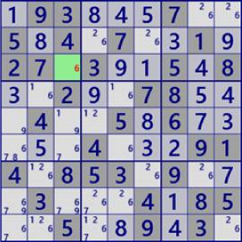 |
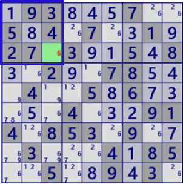
BaseSet:b1#6 |
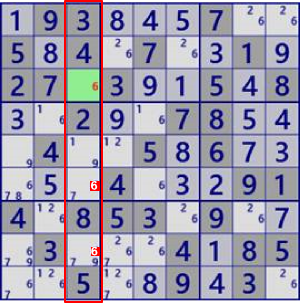
Coverset:c3#6 |
rank0 r68c3#6 is not true |
| Single/ Naked |
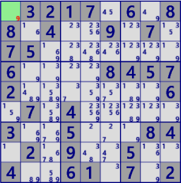 |
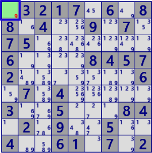
BaseSet:r1c1 |
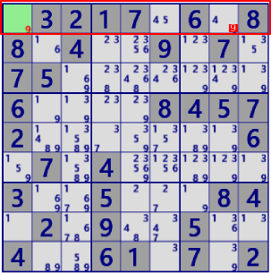
Coverset:r1 |
rank0 r1c8#9 is not true |
| Single/ Naked |
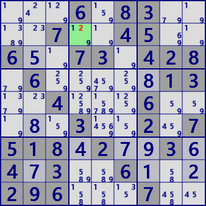 |
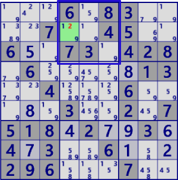
BaseSet:b2#2 |
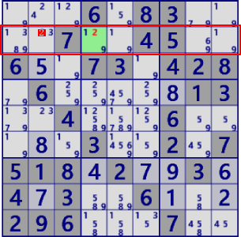
Coverset:r2#2 |
rank0 r2c2#2 is not true |
| LockedCandidate/ (type1) |
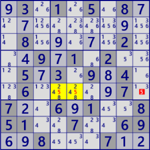 |
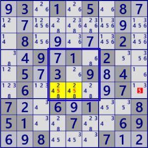
BaseSet:b5#5 |
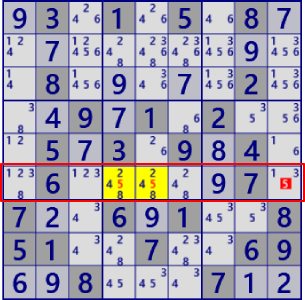
Coverset:r5#5 |
rank0 r5c9#5 is not true |
| LockedCandidate/ (type2) |
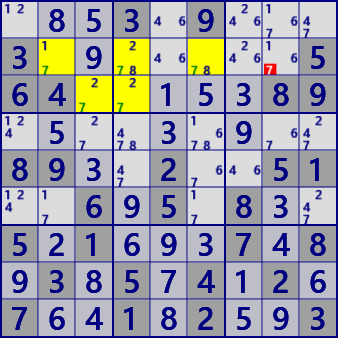 |
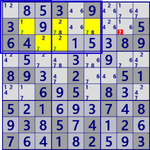
BaseSet:b12#7 |
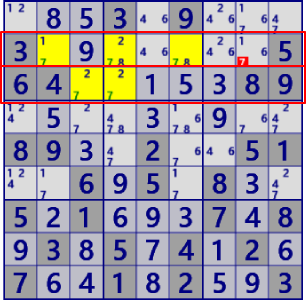
Coverset:r23#7 |
rank0 r2c8#7 is not true |
| LockedSet/Naked | 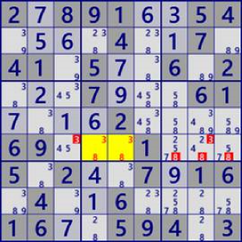 |
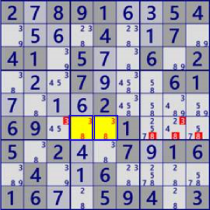
BaseSet:r6c45 |
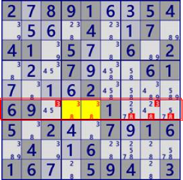
Coverset:r6#38 |
rank0 r6c38#3 r6c789#8 is not true |
| LockedSet/Hidden | 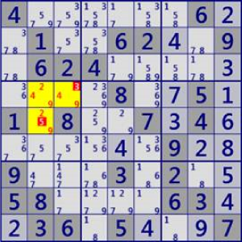 |
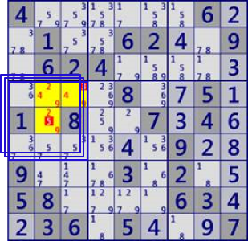
BaseSet:b4#249 |
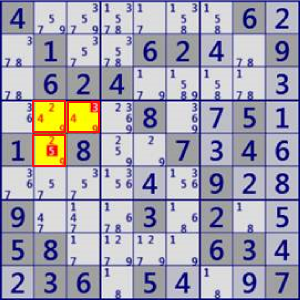
Coverset: r4c23 r5c2 |
rank0 r4c3#3 r5c2#5 is not true |
| Fish | 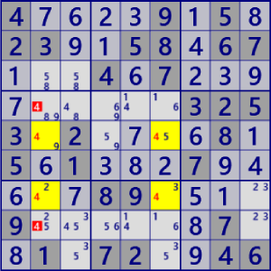 |
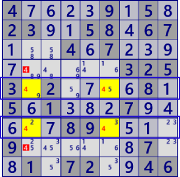
BaseSet:r57#4 |
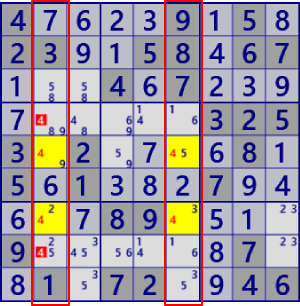
Coverset:c25#4 |
rank0 r48c2#6 is not true |
| FinnedFish | 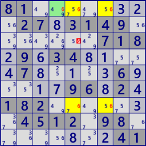 |
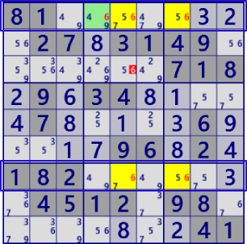
BaseSet:r17#4 |
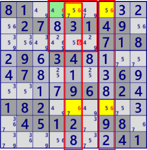
Coverset: c57#4 b2#4 |
rank1 r3c5#4 is not true |
| Franken/Mutant Fish | 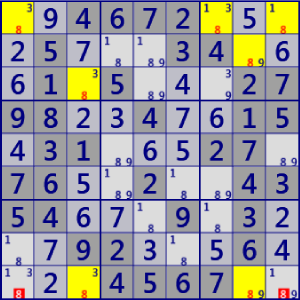 |
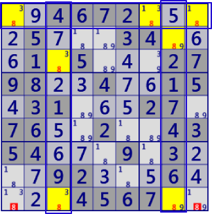
BaseSet: r1#8 c38#8 |
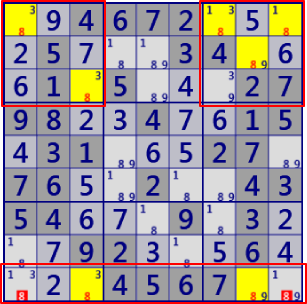
Coverset: r9#8 b13#8 |
rank1 r9c19#8 is not true |
| Finned F/M Fish | 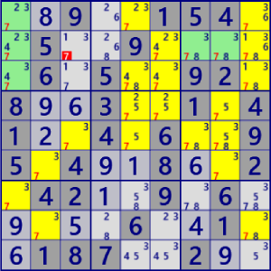 |
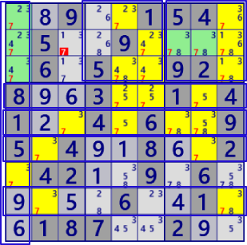
BaseSet: r4568#7 c1#7 b23#7 |
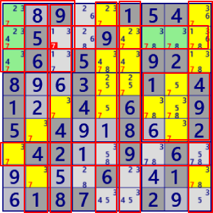
Coverset: r27#7 c23569#7 b16#7 |
rank2 r2c3#7 is not true |
| SkyScraper | 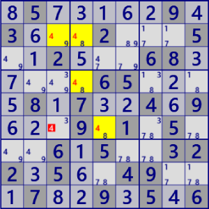 |
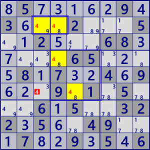
BaseSet: r2#4 b#4 |
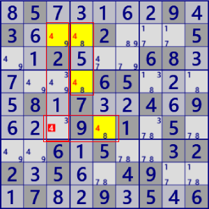
Coverset: C34#4 r6#4 |
rank1 r6c3#4 is not true |
| EmptyRectangle | 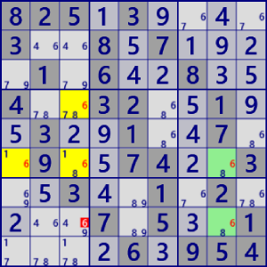 |
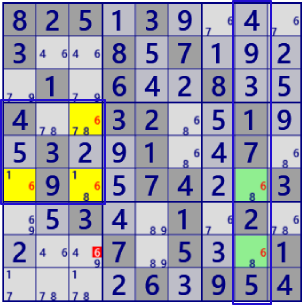
BaseSet: c8#6 b4#6 |
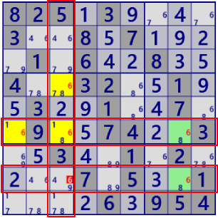
Coverset: r68#6 c3#6 |
rank1 r8c3#6 is not true |
| X-Chain | 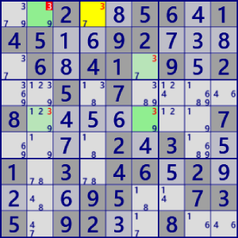 |
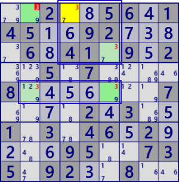
BaseSet: r5#3 b2#3 |
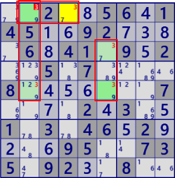
Coverset: r1#3 c25#3 |
rank1 r1c2#2 is not true |
| XY-Chain | 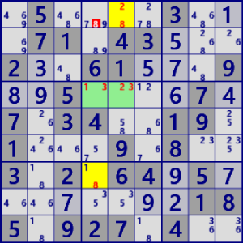 |
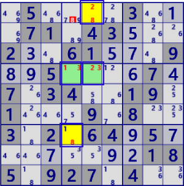
BaseSet: r1c5 r4c45 r7c4 |
Coverset: r1#8 c2#2 r4#3 c4#1 c4#8 |
rank1 r1c4#8 is not true |
| ColoringTrap |
BaseSet :r1#5 C49#5 |
Coverset: b239#5 C7#5 |
rank1 r7c8#5 is not true |
|
| ColoringWrap |
BaseSet: r7#5 C69#5 b14#5 |
Coverset: r156#5 C23#5 b3#5 |
(左図例はBase/CoverSetによる解が重なっている。） rank1 r1c7#5 is not true |
|
| MultiColoringType1 |
BaseSet: r8#4 c58#4 |
Coverset: r5#4 C8#4 b33#4 |
rank1 r12c8#4 is not true |
|
| MultiColoringType2 |
BaseSet: r6#4 c18#4 (BaseSetに含む セルのみが対象) |
Coverset: r29#4 c3#4 b6#4 Coverset: r9#4 c12#4 b6#4 |
rank1 r2c3#4 is not true rank1 r1c9#4 is not true |
|
| XY-Wing |
BaseSet: r36c2 r6c8 |
Coverset: r3#7 r6#2 c2#3 c8#7 |
rank1 r3c8#7 is not true |
|
| W-Wing |
BaseSet: r3c4 r7c7 r1#1 |
Coverset: r7#4 c4#14 c7#1 |
rank1 r7c4#4 is not true |
|
| RemotePair |
BaseSet: r4c5 r5c4 r5c9 r7c9 |
Coverset: r57#7 c5#7 c9#3 b5#3 |
rank1 r7c5#7 is not true |
|
| XYZ Wing | 
|
BaseSet: r4c78 r9c8 |
Coverset: r4#5 c8#69 b6#9 |
rank1 r6c8#9 is not true |
| XYZ Wing(ALS) |
BaseSet: r36c1 r456c2 |

Coverset: c1#69 b4#1267 (表示略） |
rank1 r5c1#6 is not true |
|
| SueDeCoq |
BaseSet: r1c5 r2c469 |
Coverset: c2#19 b2#78 |
rank0 r2c3#1 is not true |
|
| ALS XZ(SinglyLinked) |
BaseSet: r2c46 r3c24 |
Coverset: r2#67 r3#1 b1#6 b2#5 |
rank1 r1c2#6 is not true |
|
| ALS XZ(DoublyLinked) |
BaseSet: r1c3459 r3c1238 |
Coverset: r1#236 b3#24 b1#156 |
rank0 r2c67#24 is not true |
|
| ALS XY-Wing |
BaseSet: r1c78 r12c3 r4c57 |
Coverset: r14#1 r1#9 c3#45 c7#2 |
rank1 r4c3#5 is not true |
|
| ALS Chain |
BaseSet: r4c5 r4c379 r5c5 r6c7 |
Coverset: r4#247 r5#4 c6#4 b6#45 |
rank1 r5c8#4 is not true |
|
| ALS DeathBlossom |
BaseSet: r2c3 r12368c2 r27c7 |
Coverset: r2#69 r7#7 c2#34567 c7#5 |
rank1 r7c2#7 is not true |
|
| NiceLoop Continuous |
BaseSet: r8#9 c36#7 c6#1 |
Coverset: r4#7 r6c7 r8c37 |
rank0 r4c1#7 is not true |
|
| NiceLoop Discontinuous |
BaseSet: r2#5 c1#2 c3#8 r4c4 |
Coverset:r2c13 r4#2 r7#8 c4#8 |
rank1 r7c4#8 is not true |